ましろの普通の朝から、帰り道の異変、白い円の発動と失神、病院での目覚めまでを描く41秒の予告編。あすかの問いかけで、人との関わりが始まるところまでつなぐ。
制作上の決定：あすかは細身の肩・胴体と白衣のシルエットを維持。ましろは黒ボブ、紺ブレザー、青いリボンを維持。発動後の膝崩れ・倒れる場面は、川に面した横方向の欄干と遠景のアーチ橋を揃える。台詞は字幕で、キャラクター音声は未収録。人物は静止作画を使用し、文字とカメラを動かす。後付けの魔法エフェクトは使わない。
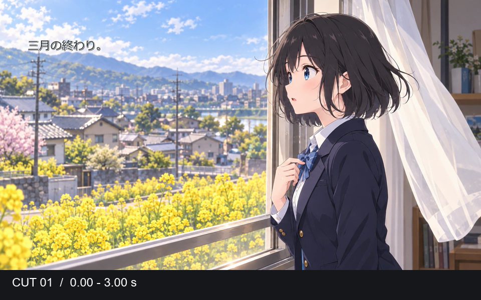
窓辺のましろ。菜の花の見える、いつもの朝から始まる。
字幕：三月の終わり。
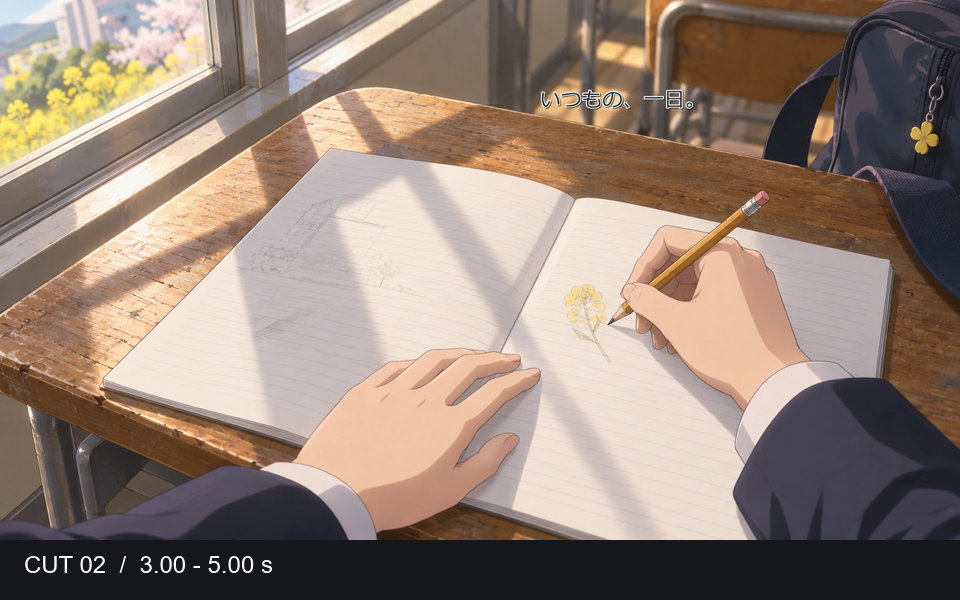
ノートに菜の花を描く手元。守りたい日常を短いカットで見せる。
字幕：いつもの、一日。
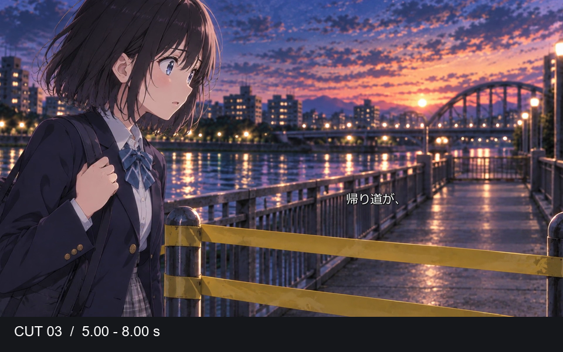
帰り道でましろが立ち止まり、封鎖テープの向こうを見る。
字幕：帰り道が、
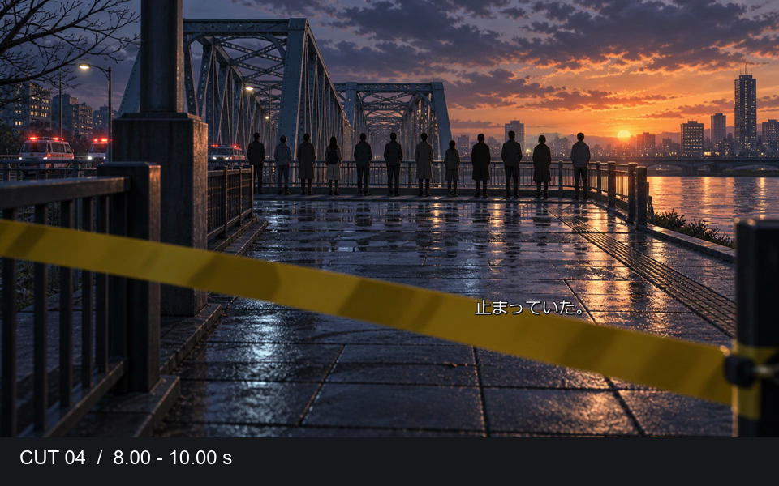
橋の向こうに動かない人々。ましろの視線の先を見せる。
字幕：止まっていた。
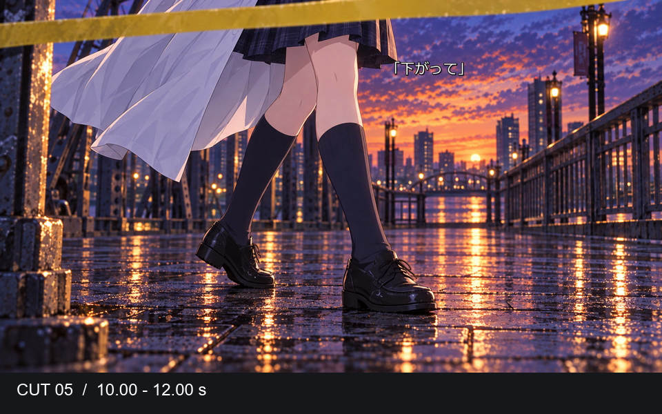
白衣の裾と足元。あすかが封鎖の先へ進む。
字幕：「下がって」
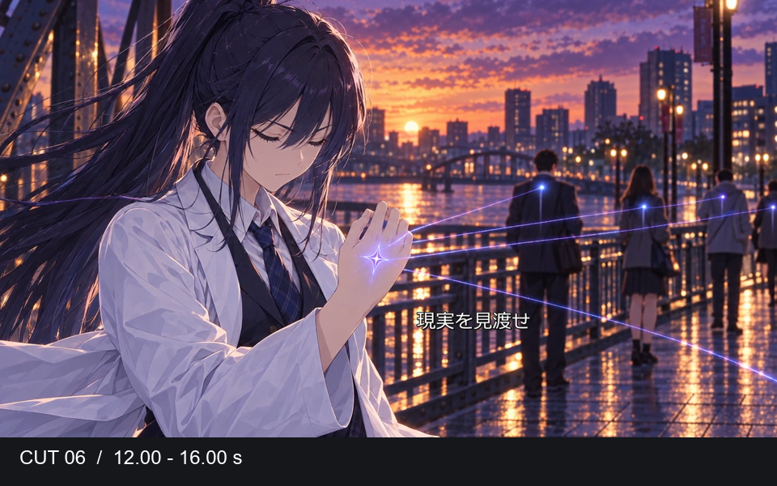
あすかが目を閉じて力を使う。元の絵にある光だけを見せる。
字幕：開眼し、／現実を見渡せ
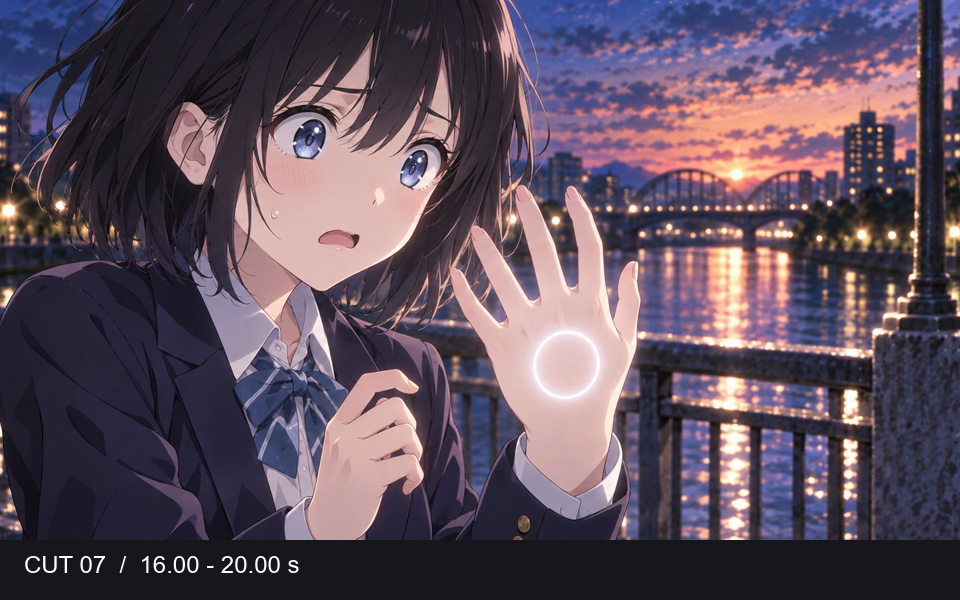
ましろの手の甲に白い円が現れる。本人は戸惑い、消そうとする。
字幕：え、／なにこれ。／消えて。
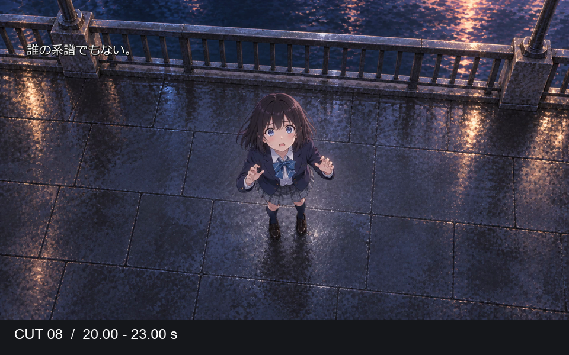
橋上のましろを俯瞰で見せる。後付けの円や粒子は重ねない。
字幕：誰の系譜でもない。
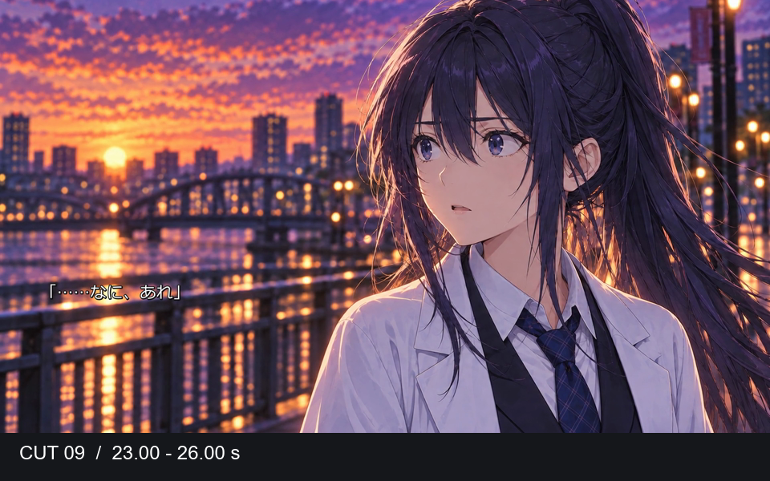
細身に修正したあすかが目を開く。見たことのない発動に驚く。
字幕：「……なに、あれ」
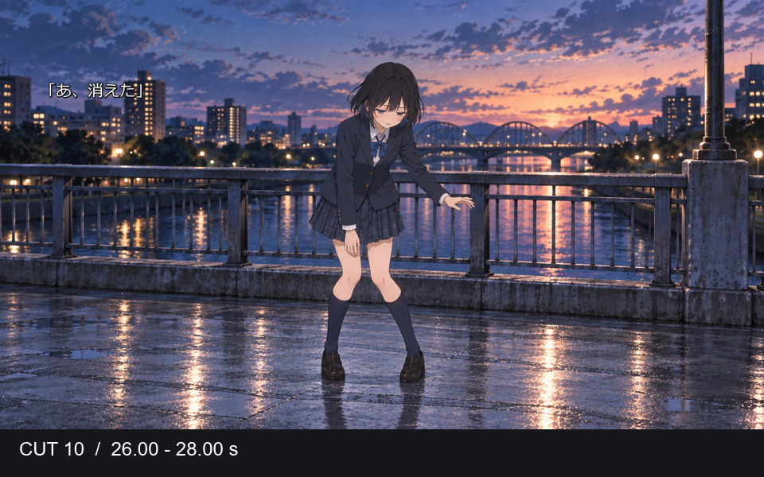
ましろの手の光は消えている。安心した直後、膝から力が抜ける。
字幕：「あ、消えた」
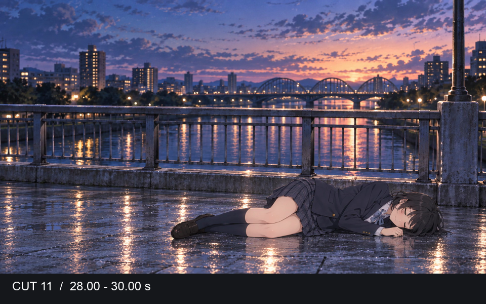
同じ欄干・川・遠景の橋を背に、ましろが横たわる。字幕を切って倒れた事実を見せる。
字幕：なし
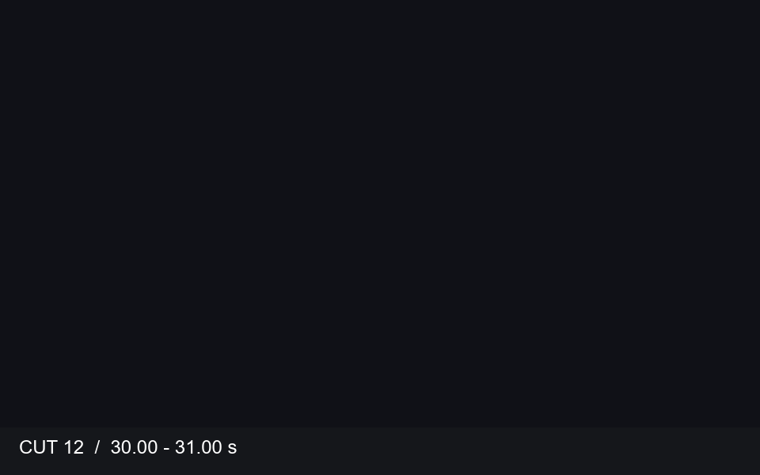
意識が途切れ、時間と場所が変わる。
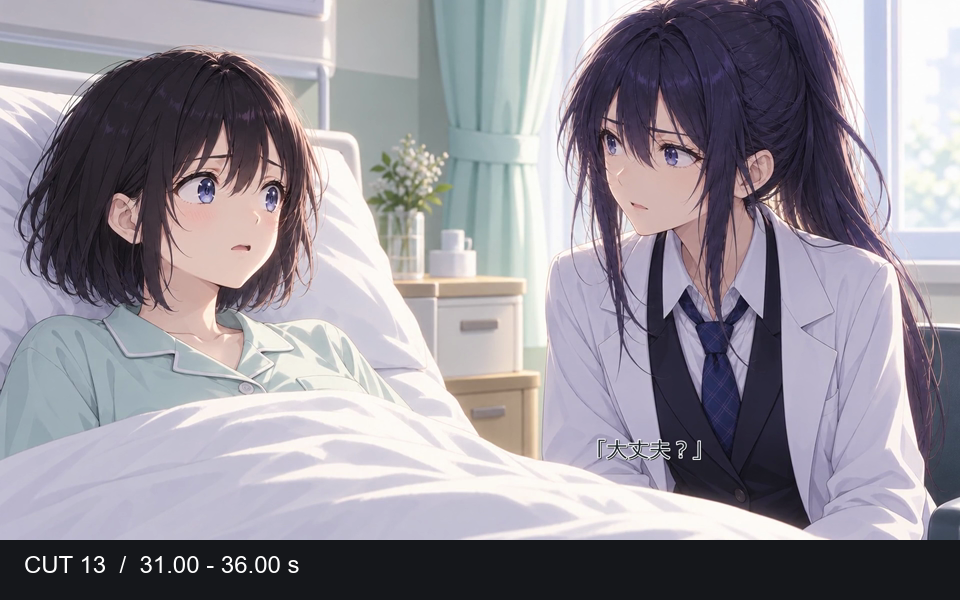
ましろが病室で目を覚ます。そばにいるあすかが心配そうに声をかける。
字幕：目が覚めると、病院にいた。／「大丈夫？」
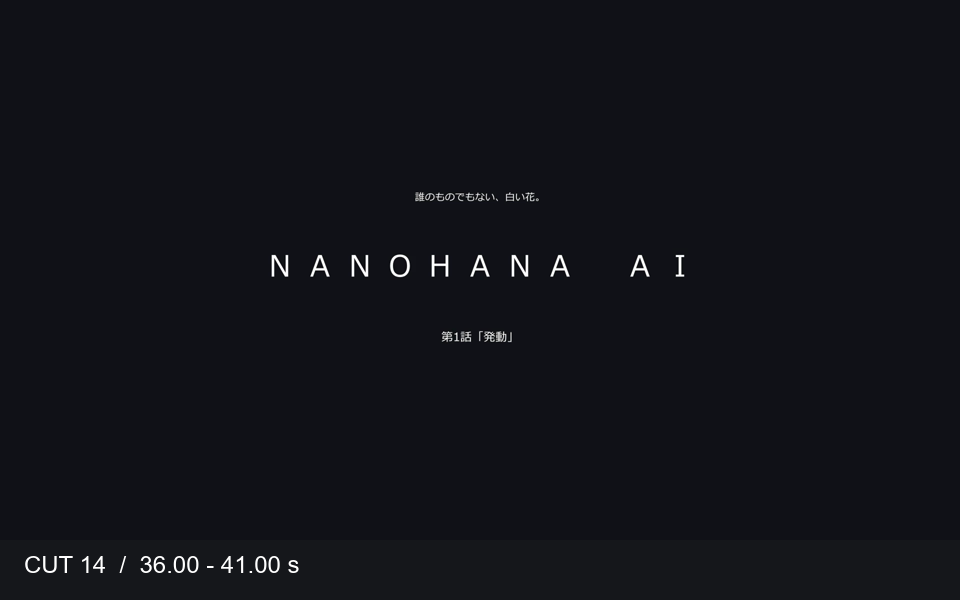
NANOHANA AIの文字が順に現れ、第1話の題名で締める。
字幕：誰のものでもない、白い花。／NANOHANA AI／第1話「発動」